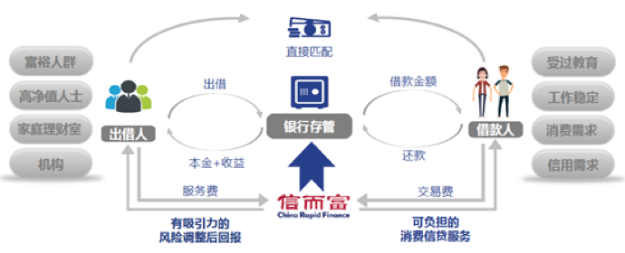

小额分散
- 先进的技术系统可将投资人的资金自动分散匹配给多个不同的借款人，有效分散风险。
风控体系
- 完善的信用评估体系
- 借鉴消费信贷行业的全球领先经验，实施覆盖贷前、贷后和贷中全过程的评分模型和风险策略告。
- 国际先进的欺诈防范策略系统
- 识别和预防欺诈风险，保证借款人及其借款目的的真实性。
- 自动标准化决策体系
- 开发自动授信决策系统，基于成百上千的数据维度，去除人工判断等主观因素影响，实现精准化授信。
- 客户验证中心100%亲访亲核
- 100%访问客户家庭、100%访问客户单位、100%征信数据评分、100%核查客户银行信息。
- 风控经验丰富，实力雄厚
- 深耕信贷行业十七年，拥有丰富的信贷分析与管理经验，曾帮助中国近一半的全国性银行发行信用卡超过一亿张。公司在美国硅谷设有大数据技术研究实验室，研究大数据分析、信用评分模型、人工智能、机器学习等前沿技术。
安全性
- 业内率先与恒丰银行合作实现资金存管
- 平台实现投资人与借款人点对点直接匹配，没有任何中间转贷交易。投资人和借款人真实匹配，客户资金由银行存管。
- 
会计事务所审计
- 国内第一家由普华永道出具年度审计报告的网络借贷信息中介机构
- 平台实现投资人与借款人点对点直接匹配，没有任何中间转贷交易。投资人和借款人真实匹配，客户资金由银行存管。